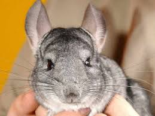
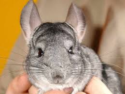
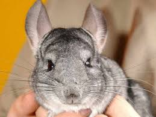
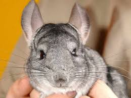

Csincsilla
 

 

A csincsilla régebben Peru, Bolívia, Észak-Argentína és Chile hegyvidéki területein volt honos. Észak-Chilén kívül ma már ritkán lehet vele találkozni az Andokban. A csincsillát kíméletlenül vadászták, mára veszélyeztetett fajjá vált. A védelme érdekében hozott törvényeknek köszönhetően 1970 óta lassan újra nő a számuk.
A csincsilla bundája azért olyan sűrű, mert minden szőrtüszőből 40-80 szőrszál nő. Egy négyzetcentiméteren több szőrszála van, mint bármely más emlősnek. Az egyes szőrszálak annyira finomak, hogy szabad szemmel alig láthatók. Egy hosszú női bunda előállításához legalább 150 csincsilla prémjére van szükség. A nőstény bajsza sokkal hosszabb, mint a hímé.
A csincsilla társas lény, és egy életre választ párt magának. Táplálékát főleg fűfélék és lágy szárú növények képezik, de állattartóként célszerű vigyázni, mert a nagy nedvességtartalmú növények a csincsilla felpuffadásához vezethetnek. Kedveli a magokat és a gyümölcsöket is. Fogságban 15-20 évig él. Kedvelt háziállat.
Az állat fej-törzs-hossza 25-26 centiméter, farokhossza 17-18 centiméter és testtömege 420-600 gramm, a tenyészállatok akár 800 grammosak is lehetnek. A csincsilla bundája sűrű, puha és jól védi a hidegtől. Szőre szürke színű, selymes tapintású, puha. Minden szőrtüszőből legalább 40 szőrszál nő ki. Testének felső része gyöngyszínű szürkésfehér vagy ezüstszürke, melyen enyhén erezetes minta található. A hasoldal világosabb. Nagy fején széles pofa és nagy fekete szemek vannak. A hosszú serteszerű bajusz lehet fekete vagy fehér. Füle lekerekített hegyű és elálló, kiváló hallást biztosít az állatnak. A hátsó végtagok hosszúak és izmosak. Az ujjak végén puha párnácskák találhatók, ezek védik a lábat a sziklák között. Farka hosszú és bozontos. A farkot borító szőrszálak hosszabbak és durvábbak, mint a bunda többi részén levők; színük fekete vagy barna.
Az ivarérettséget körülbelül 4 hónapos korban éri el. A párzási időszak egész évben tart. A nőstény akár háromszor is képes elleni egy évben, szabadon azonban általában csak egyszer. A vemhesség körülbelül 110 napig tart, ennek végén a nőstény 1-4 utódot hoz a világra. Születésükkor a kicsinyek csak 40-50 grammot nyomnak, és 10 centiméter hosszúak. Bundájuk és 20 foguk azonban már teljesen kinőtt, és szemük nyitva van. Az elválasztás 6-8 hét után történik meg.
A csincsilla legközelebbi rokona és a Chinchilla emlősnem másik faja a rövidfarkú csincsilla (Chinchilla chinchilla).